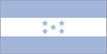

{kind=link}


![[Country map of Honduras]](../maps/ho-map.jpg)
| Honduras |  |
|
| | |
| Introduction |
Background: Part of Spain's vast empire in the New World, Honduras became as independent nation in 1821. After two and one-half decades of mostly military rule, a freely elected civilian government came to power in 1982. During the 1980s, Honduras proved a haven for anti-Sandinista contras fighting the Marxist Nicaraguan government and an ally to Salvadoran government forces fighting against leftist guerrillas.
| Geography |
Location: Middle America, bordering the Caribbean Sea, between Guatemala and Nicaragua and bordering the North Pacific Ocean, between El Salvador and Nicaragua
Geographic coordinates: 15 00 N, 86 30 W
Map references: Central America and the Caribbean
Area:
total:
112,090 sq km
land:
111,890 sq km
water:
200 sq km
Area - comparative: slightly larger than Tennessee
Land boundaries:
total:
1,520 km
border countries:
Guatemala 256 km, El Salvador 342 km, Nicaragua 922 km
Coastline: 820 km
Maritime claims:
contiguous zone:
24 nm
continental shelf:
natural extension of territory or to 200 nm
exclusive economic zone:
200 nm
territorial sea:
12 nm
Climate: subtropical in lowlands, temperate in mountains
Terrain: mostly mountains in interior, narrow coastal plains
Elevation extremes:
lowest point:
Caribbean Sea 0 m
highest point:
Cerro Las Minas 2,870 m
Natural resources: timber, gold, silver, copper, lead, zinc, iron ore, antimony, coal, fish, hydropower
Land use:
arable land:
15%
permanent crops:
3%
permanent pastures:
14%
forests and woodland:
54%
other:
14% (1993 est.)
Irrigated land: 740 sq km (1993 est.)
Natural hazards: frequent, but generally mild, earthquakes; damaging hurricanes and floods along Caribbean coast
Environment - current issues: urban population expanding; deforestation results from logging and the clearing of land for agricultural purposes; further land degradation and soil erosion hastened by uncontrolled development and improper land use practices such as farming of marginal lands; mining activities polluting Lago de Yojoa (the country's largest source of fresh water) as well as several rivers and streams with heavy metals; severe Hurricane Mitch damage
Environment - international agreements:
party to:
Biodiversity, Climate Change, Desertification, Endangered Species, Hazardous Wastes, Law of the Sea, Marine Dumping, Nuclear Test Ban, Ozone Layer Protection, Tropical Timber 83, Tropical Timber 94, Wetlands
signed, but not ratified:
Climate Change-Kyoto Protocol
| People |
Population:
6,249,598
note:
estimates for this country explicitly take into account the effects of excess mortality due to AIDS; this can result in lower life expectancy, higher infant mortality and death rates, lower population and growth rates, and changes in the distribution of population by age and sex than would otherwise be expected (July 2000 est.)
Age structure:
0-14 years:
43% (male 1,361,259; female 1,303,041)
15-64 years:
54% (male 1,665,406; female 1,699,680)
65 years and over:
3% (male 104,469; female 115,743) (2000 est.)
Population growth rate: 2.52% (2000 est.)
Birth rate: 32.65 births/1,000 population (2000 est.)
Death rate: 5.31 deaths/1,000 population (2000 est.)
Net migration rate: -2.17 migrant(s)/1,000 population (2000 est.)
Sex ratio:
at birth:
1.05 male(s)/female
under 15 years:
1.04 male(s)/female
15-64 years:
0.98 male(s)/female
65 years and over:
0.9 male(s)/female
total population:
1 male(s)/female (2000 est.)
Infant mortality rate: 31.29 deaths/1,000 live births (2000 est.)
Life expectancy at birth:
total population:
69.93 years
male:
67.91 years
female:
72.06 years (2000 est.)
Total fertility rate: 4.26 children born/woman (2000 est.)
Nationality:
noun:
Honduran(s)
adjective:
Honduran
Ethnic groups: mestizo (mixed Amerindian and European) 90%, Amerindian 7%, black 2%, white 1%
Religions: Roman Catholic 97%, Protestant minority
Languages: Spanish, Amerindian dialects
Literacy:
definition:
age 15 and over can read and write
total population:
72.7%
male:
72.6%
female:
72.7% (1995 est.)
| Government |
Country name:
conventional long form:
Republic of Honduras
conventional short form:
Honduras
local long form:
Republica de Honduras
local short form:
Honduras
Data code: HO
Government type: democratic constitutional republic
Capital: Tegucigalpa
Administrative divisions: 18 departments (departamentos, singular - departamento); Atlantida, Choluteca, Colon, Comayagua, Copan, Cortes, El Paraiso, Francisco Morazan, Gracias a Dios, Intibuca, Islas de la Bahia, La Paz, Lempira, Ocotepeque, Olancho, Santa Barbara, Valle, Yoro
Independence: 15 September 1821 (from Spain)
National holiday: Independence Day, 15 September (1821)
Constitution: 11 January 1982, effective 20 January 1982; amended 1995
Legal system: rooted in Roman and Spanish civil law with increasing influence of English common law; recent judicial reforms include abandoning Napoleonic legal codes in favor of the oral adversarial system; accepts ICJ jurisdiction, with reservations
Suffrage: 18 years of age; universal and compulsory
Executive branch:
chief of state:
President Carlos Roberto FLORES Facusse (since 27 January 1998); note - the president is both the chief of state and head of government
head of government:
President Carlos Roberto FLORES Facusse (since 27 January 1998); note - the president is both the chief of state and head of government
cabinet:
Cabinet appointed by president
elections:
president elected by popular vote for a four-year term; election last held 30 November 1997 (next to be held 30 November 2001)
election results:
Carlos Roberto FLORES Facusse elected president; percent of vote - Carlos Roberto FLORES Facusse (PL) 50%, Nora de MELGAR (PNH) 40%, other 10%
Legislative branch:
unicameral National Congress or Congreso Nacional (128 seats; members are elected by popular vote to serve four-year terms)
elections:
last held on 30 November 1997 (next to be held 30 November 2001)
election results:
percent of vote by party - PL 46%, PN 38%, PINU-SD 4%, PDC 2%, PUD 2%; seats by party - PL 67, PN 55, PINU-SD 3, PDC 2, PUD 1
Judicial branch: Supreme Court of Justice or Corte Suprema de Justicia, judges are elected for four-year terms by the National Congress
Political parties and leaders: Christian Democratic Party or PDC [Arturo CORRALES Alvarez, president]; Democratic Unification Party or PUD [Gustavo GARCIA Espana, president]; Honduran National Party or PNH [leader NA]; Liberal Party or PL [Jorge REINA, president]; National Innovation and Unity Party-Social Democratic Party or PINU-SD [Olban VALLADARES, president]; National Party of Honduras or PN [Porfirio LOBO Sega, president]
Political pressure groups and leaders: Committee for the Defense of Human Rights in Honduras or CODEH; Confederation of Honduran Workers or CTH; Coordinating Committee of Popular Organizations or CCOP; General Workers Confederation or CGT; Honduran Council of Private Enterprise or COHEP; National Association of Honduran Campesinos or ANACH; National Union of Campesinos or UNC; United Federation of Honduran Workers or FUTH
International organization participation: BCIE, CACM, ECLAC, FAO, G-77, IADB, IBRD, ICAO, ICFTU, ICRM, IDA, IFAD, IFC, IFRCS, ILO, IMF, IMO, Intelsat, Interpol, IOC, IOM, ITU, LAES, LAIA (observer), MINURSO, NAM, OAS, OPANAL, OPCW, PCA, UN, UNCTAD, UNESCO, UNIDO, UPU, WCL, WFTU, WHO, WIPO, WMO, WTrO
Diplomatic representation in the US:
chief of mission:
Ambassador Hugo NOE PINO
chancery:
3007 Tilden Street NW, Washington, DC 20008
telephone:
[1] (202) 966-7702
FAX:
[1] (202) 966-9751
consulate(s) general:
Chicago, Houston, Los Angeles, Miami, New Orleans, New York, San Francisco, San Juan (Puerto Rico), Tampa
consulate(s):
Boston, Detroit, and Jacksonville
Diplomatic representation from the US:
chief of mission:
Ambassador Frank ALMAGUER
embassy:
Avenida La Paz, Apartado Postal No. 3453, Tegucigalpa
mailing address:
American Embassy, APO AA 34022, Tegucigalpa
telephone:
[504] 238-5114, 326-9320
FAX:
[504] 236-9037
Flag description: three equal horizontal bands of blue (top), white, and blue with five blue five-pointed stars arranged in an X pattern centered in the white band; the stars represent the members of the former Federal Republic of Central America - Costa Rica, El Salvador, Guatemala, Honduras, and Nicaragua; similar to the flag of El Salvador, which features a round emblem encircled by the words REPUBLICA DE EL SALVADOR EN LA AMERICA CENTRAL centered in the white band; also similar to the flag of Nicaragua, which features a triangle encircled by the word REPUBLICA DE NICARAGUA on top and AMERICA CENTRAL on the bottom, centered in the white band
| Economy |
Economy - overview: Honduras spent 1999 primarily recovering from Hurricane Mitch, which killed more than 5,000 people and caused about $3 billion in damage. Although it is slated to receive about $2.76 billion in international aid, the economy shrank 3% with widening current account and fiscal deficits in 1999. It nevertheless met most of its macroeconomic targets, and 2000 should see economic recovery as reconstruction projects make progress and the agricultural sector recovers. Honduras may also get relief from its $4.4 billion external debt under the Highly Indebted Poor Countries (HIPC) initiative.
GDP: purchasing power parity - $14.1 billion (1999 est.)
GDP - real growth rate: -3% (1999 est.)
GDP - per capita: purchasing power parity - $2,050 (1999 est.)
GDP - composition by sector:
agriculture:
20%
industry:
25%
services:
55% (1998 est.)
Population below poverty line: 50% (1992 est.)
Household income or consumption by percentage share:
lowest 10%:
1.2%
highest 10%:
42.1% (1996)
Inflation rate (consumer prices): 14% (1999 est.)
Labor force: 2.3 million (1997 est.)
Labor force - by occupation: agriculture 29%, industry 21%, services 60% (1998 est.)
Unemployment rate: 12% (1999); underemployed 30% (1997 est.)
Budget:
revenues:
$980 million
expenditures:
$1.15 billion including capital expenditures of $NA (1998 est.)
Industries: sugar, coffee, textiles, clothing, wood products
Industrial production growth rate: 9% (1992 est.)
Electricity - production: 2.904 billion kWh (1998)
Electricity - production by source:
fossil fuel:
34.44%
hydro:
65.56%
nuclear:
0%
other:
0% (1998)
Electricity - consumption: 2.742 billion kWh (1998)
Electricity - exports: 16 million kWh (1998)
Electricity - imports: 57 million kWh (1998)
Agriculture - products: bananas, coffee, citrus; beef; timber; shrimp
Exports: $1.6 billion (f.o.b., 1999 est.)
Exports - commodities: coffee, bananas, shrimp, lobster, meat; zinc, lumber
Exports - partners: US 73%, Japan 4%, Germany 4%, Belgium, Spain (1998)
Imports: $2.7 billion (f.o.b., 1999 est.)
Imports - commodities: machinery and transport equipment, industrial raw materials, chemical products, fuels, foodstuffs
Imports - partners: US 60%, Guatemala 5%, Netherlands Antilles, Japan, Germany, Mexico, El Salvador (1998)
Debt - external: $4.4 billion (1999)
Economic aid - recipient: $557.8 million (1999)
Currency: 1 lempira (L) = 100 centavos
Exchange rates: lempiras (L) per US$1 - 14.5744 (January 2000), 14.5039 (1999), 13.8076 (1998), 13.0942 (1997), 12.8694 (1996), 10.3432 (1995)
Fiscal year: calendar year
| Communications |
Telephones - main lines in use: 190,200 (1996)
Telephones - mobile cellular: 0 (1995)
Telephone system:
inadequate system
domestic:
NA
international:
satellite earth stations - 2 Intelsat (Atlantic Ocean); connected to Central American Microwave System
Radio broadcast stations: AM 241, FM 53, shortwave 12 (1998)
Radios: 2.45 million (1997)
Television broadcast stations: 11 (plus 17 repeaters) (1997)
Televisions: 570,000 (1997)
Internet Service Providers (ISPs): 14 (1999)
| Transportation |
Railways:
total:
595 km
narrow gauge:
349 km 1.067-m gauge; 246 km 0.914-m gauge (1999)
Highways:
total:
15,400 km
paved:
3,126 km
unpaved:
12,274 km (1999 est.)
Waterways: 465 km navigable by small craft
Ports and harbors: La Ceiba, Puerto Castilla, Puerto Cortes, San Lorenzo, Tela, Puerto Lempira
Merchant marine:
total:
306 ships (1,000 GRT or over) totaling 848,150 GRT/980,995 DWT
ships by type:
bulk 26, cargo 187, chemical tanker 5, container 7, livestock carrier 1, passenger 2, passenger/cargo 4, petroleum tanker 43, refrigerated cargo 15, roll-on/roll-off 9, short-sea passenger 5, vehicle carrier 2 (1999 est.)
note:
a flag of convenience registry; Russia owns 6 ships, Vietnam 1, Singapore 3, North Korea 1 (1998 est.)
Airports: 119 (1999 est.)
Airports - with paved runways:
total:
12
2,438 to 3,047 m:
3
1,524 to 2,437 m:
2
914 to 1,523 m:
4
under 914 m:
3 (1999 est.)
Airports - with unpaved runways:
total:
107
1,524 to 2,437 m:
2
914 to 1,523 m:
21
under 914 m:
84 (1999 est.)
| Military |
Military branches: Army, Navy (includes Marines), Air Force
Military manpower - military age: 18 years of age
Military manpower - availability:
males age 15-49:
1,467,615 (2000 est.)
Military manpower - fit for military service:
males age 15-49:
874,053 (2000 est.)
Military manpower - reaching military age annually:
males:
70,636 (2000 est.)
Military expenditures - dollar figure: $33 million (FY98)
Military expenditures - percent of GDP: 0.6% (FY98)
| Transnational Issues |
Disputes - international: the Honduras-El Salvador Border Protocol ratified by Honduras in May 1999 established a framework for a long-delayed border demarcation, which is currently underway; with respect to the maritime boundary in the Golfo de Fonseca, the ICJ referred to the line determined by the 1900 Honduras-Nicaragua Mixed Boundary Commission and advised that some tripartite resolution among El Salvador, Honduras, and Nicaragua likely would be required; maritime boundary dispute with Nicaragua in the Caribbean Sea
Illicit drugs: transshipment point for drugs and narcotics; illicit producer of cannabis, cultivated on small plots and used principally for local consumption; corruption is a major problem